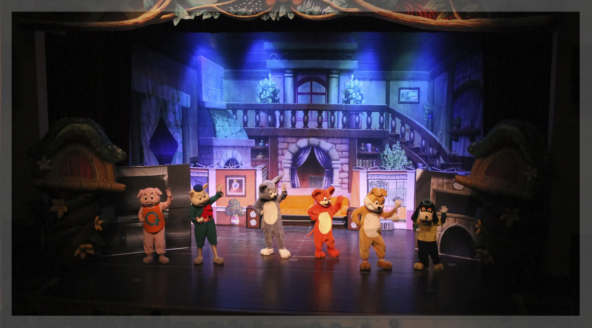

공연 연혁
전국의 아이들을 만나 온 극단 씨앗의 발자취
도서관에서 백화점, 국제 페스티벌까지
2006년부터 기록된 121회의 주요 공연입니다. 유치원과 학교, 도서관, 문화회관, 백화점 문화홀, 그리고 부산 국제 매직 페스티벌까지 아이들이 있는 곳이라면 어디든 찾아갔습니다.
2021
- 4월오산 소리울 도서관 어린이 뮤지컬 공연 〈오즈의 마법사〉
- 4월여수 율촌도서관 어린이 퓨전 뮤지컬 공연 〈팥죽할멈과 호랑이〉
- 4월비대면별내 도서관 환경 보호 퍼포먼스 공연 〈더블클린업〉
- 4월비대면여주 도서관 융복합 미스테리 추리극 〈퐁퐁탐정〉
- 4월비대면청주 금빛 도서관 어린이 뮤지컬 공연 〈브레멘 음악대〉
- 4월비대면부산 진구 어린이 청소년 도서관 도서 권장 퍼포먼스 공연 〈현작가의 베스트 셀러〉
- 4월비대면인천 검단 도서관 도서 권장 퍼포먼스 공연 〈현작가의 베스트 셀러〉
- 4월비대면청주 청원 도서관 마술 공연 〈신비한 마술 박물관〉
- 5월못골 한옥 어린이 도서관 어린이 뮤지컬 공연 〈브레멘 음악대〉
- 5월오산 소리울 도서관 어린이 뮤지컬 공연 〈피노키오〉
- 5월비대면달서 어린이 도서관 융복합 미스테리 추리극 〈퐁퐁탐정〉
- 5월인천 한중문화회관 어린이 뮤지컬 공연 〈피노키오〉
- 5월부산 구포 도서관 어린이 뮤지컬 공연 〈피노키오〉
- 6월비대면아산 탕정 온샘 도서관 도서 권장 퍼포먼스 공연 〈현작가의 베스트 셀러〉
- 6월비대면청주 서원 도서관 어린이 뮤지컬 공연 〈오즈의 마법사〉
- 6월국립 광주 박물관 융복합 미스테리 추리극 〈퐁퐁탐정〉
- 9월비대면인천 검단 도서관 마술 공연 〈신비한 마술 박물관〉
- 9월비대면성남 분당도서관 도서 권장 퍼포먼스 공연 〈현작가의 베스트 셀러〉
- 9월비대면여주 도서관 어린이 뮤지컬 공연 〈오즈의 마법사〉
- 9월비대면울진 남부 도서관 마술 공연 〈신비한 마술 박물관〉
- 10월비대면인천 미추홀 도서관 융복합 미스테리 추리극 〈퐁퐁탐정〉
- 10월대전 한밭 도서관 어린이 뮤지컬 공연 〈브레멘 음악대〉
- 10월비대면광명 하안 도서관 환경 보호 퍼포먼스 공연 〈더블클린업〉
2020
- 1월위례 스타필드 어린이 뮤지컬 공연 〈브레멘 음악대〉
- 1월충청 신세계 백화점 벌룬 매직쇼 〈슈퍼브라더스〉
- 1월하남 스파필드 어린이 뮤지컬 공연 〈브레멘 음악대〉
- 5월비대면북서울 미술관 환경 보호 퍼포먼스 공연 〈더블클린업〉
- 6월비대면북서울 미술관 융복합 미스테리 추리극 공연 〈퐁퐁탐정〉
- 7월비대면북서울 미술관 어린이 뮤지컬 공연 〈매직신데렐라〉
- 8월비대면북서울 미술관 어린이 뮤지컬 공연 〈브레멘 음악대〉
- 9월비대면북서울 미술관 어린이 뮤지컬 공연 〈피노키오〉
- 10월속초 켄싱턴 리조트 버스킹 공연 〈더블클린업, 퐁퐁탐정〉
- 10월인천 해돋이 도서관 마술 공연 〈신비한 마술 박물관〉
- 11월부산 B.I.M.F 부산 국제 매직 페스티벌 초청 공연 〈하우스, 더블클린업, 퐁퐁탐정〉
2019
- 2월대전 한밭도서관 어린이 뮤지컬 공연 〈매직 신데렐라〉
- 4월평택 장당도서관 어린이 뮤지컬 공연 〈오즈의 마법사〉
- 4월광천 문예회관 대극장 어린이 뮤지컬 공연 〈오즈의 마법사〉
- 4월용인 주북교회 어린이 뮤지컬 공연 〈팥죽할멈과 호랑이〉
- 4월평택 오성초등학교 어린이 뮤지컬 공연 〈오즈의 마법사〉
- 5월세종 유치원 연합회 어린이 뮤지컬 공연 〈매직 신데렐라〉
- 5월용인 육아종합센터 어린이 뮤지컬 2회 공연 〈오즈의 마법사〉
- 5월삼성전자 어린이 뮤지컬 공연 〈오즈의 마법사〉
- 5월삼성전자 어린이 뮤지컬 공연 〈피노키오〉
- 5월성남 스타필드 위례 어린이 뮤지컬 공연 〈오즈의 마법사〉
- 6월하남 스타필드 어린이 뮤지컬 공연 〈매직 신데렐라〉
- 6월충청도 현대백화점 문화홀 어린이 뮤지컬 공연 〈아기돼지 삼형제〉
- 6월성남 스타필드 어린이 뮤지컬 공연 〈매직 신데렐라〉
- 6월서울 코엑스 어린이 뮤지컬 공연 〈오즈의 마법사〉
- 7월군산 롯데몰 어린이 뮤지컬 공연 〈매직 신데렐라〉
- 8월용인 육아종합지원센터 어린이 뮤지컬 4회 공연 〈피노키오〉
- 9월서울 강동어린이회관 어린이 뮤지컬 장기 공연 〈빨간모자〉
- 9월서울 북서울미술관 어린이 뮤지컬 공연 〈오즈의 마법사〉
- 9월횡성 횡성문화예술회관 어린이 뮤지컬 2회 공연 〈아기돼지 삼형제〉
- 10월세종 한솔동복합커뮤니티센터 어린이 뮤지컬 공연 〈오즈의 마법사〉
- 11월서울 광진구육아종합지원센터 어린이 뮤지컬 공연 〈오즈의 마법사〉
- 11월진주 능력개발원 어린이 뮤지컬 공연 〈내 친구 번개야〉
- 12월서울 광진구육아종합지원센터 어린이 뮤지컬 공연 〈빨간모자〉
- 12월부천 현대백화점 어린이 뮤지컬 공연 〈성냥팔이 소녀〉
2018
- 3월서울 현대백화점 신촌점 문화홀 어린이 뮤지컬 공연 〈오즈의 마법사〉
- 4월목포 목포문예회관 어린이 뮤지컬 공연 〈오즈의 마법사〉
- 4월서울 강서 구립 꿈꾸는도서관 어린이 뮤지컬 공연 〈매직 신데렐라〉
- 4월광주 학생교육회관 어린이 뮤지컬 2회공연 〈오즈의 마법사〉
- 4월서울 현대백화점 판교점 문화홀 어린이 뮤지컬 3회 공연 〈매직 신데렐라〉
- 4월순천 문화건강센터 어린이 뮤지컬 공연 〈오즈의 마법사〉
- 5월인천 새말초등학교 어린이 뮤지컬 공연 〈피노키오〉
- 6월인천 부평남초등학교 어린이 뮤지컬 공연 〈아기돼지 삼형제〉
- 8월인천 학생교육문화회관 어린이 뮤지컬 2회 공연 〈아기돼지 삼형제〉
- 8월서울 송파구민회관 어린이 뮤지컬 공연 〈아기돼지 삼형제〉
- 9월대전 대전 유치원 연합회 어린이 뮤지컬 공연 〈매직 신데렐라〉
- 10월인천 만수초등학교 어린이 뮤지컬 공연 〈매직 신데렐라〉
- 10월대구 이시아폴리스 어린이 뮤지컬 공연 〈오즈의 마법사〉
- 11월청주 율량초등학교 어린이 뮤지컬 공연 〈피노키오〉
- 12월인천 논현초등학교 어린이 뮤지컬 공연 〈아기돼지 삼형제〉
- 12월광주 유치원 연합회 어린이 뮤지컬 공연 〈피노키오〉
- 12월무주 무주반디랜드 어린이 뮤지컬 공연 〈피노키오〉
2017
- 9월부산 부산시민회관 어린이 뮤지컬 공연 〈매직 신데렐라〉
- 10월인천 인천한중문화회관 어린이 뮤지컬 4회 공연 〈빨간모자〉
- 10월당진 당진문예의전당 어린이 뮤지컬 2회 공연 〈오즈의 마법사〉
- 12월서울 중랑구민회관 어린이 뮤지컬 2회 공연 〈루돌프와 산타클로스〉
- 12월서울 동대문구민회관 어린이 뮤지컬 2회 공연 〈루돌프와 산타클로스〉
- 12월서울 동대문구민회관 문화소외계층 무료 초청공연 〈루돌프와 산타클로스〉
2016
- 4월광주 아시아문화의 전당 어린이 뮤지컬 공연 〈오즈의 마법사〉
- 5월서울 중량구민회관 어린이 뮤지컬 공연 〈아기돼지 삼형제〉
- 5월서울 서대문 문화체육센터 어린이 뮤지컬 공연 〈호랑이를 삼킨 담배〉
- 8월서울 중랑구민회관 어린이 뮤지컬 공연 〈내 친구 번개야〉
- 12월서울 중랑구민회관 어린이 뮤지컬 공연 〈꾀돌이 토끼의 재판〉
- 12월양평 양평군민회관 어린이 뮤지컬 공연 〈루돌프와 산타클로스〉
2015
- 2월서울 노원구민회관 어린이 뮤지컬 공연 〈피노키오〉
- 5월영광 문화예술회관 대공연장 어린이 뮤지컬 공연 〈매직 신데렐라〉
2014
- 4월광주 광주문예회관 어린이 뮤지컬 공연 〈매직 신데렐라〉
- 6월김포 김포시민회관 어린이 뮤지컬 공연 〈매직 신데렐라〉
- 6월양평 군민회관 어린이 뮤지컬 공연 〈매직 신데렐라〉
- 10월안산 올림픽기념관 어린이 뮤지컬 공연 〈매직 신데렐라〉
- 11월을숙도 문화회관 어린이 뮤지컬 공연 〈오즈의 마법사〉
2013
- 4월당진문예회관 어린이 뮤지컬 공연 〈오즈의 마법사〉
- 5월라마다 호텔 어린이 뮤지컬 공연 〈매직 신데렐라〉
- 6월제주 제주아트센터 어린이 뮤지컬 공연 〈매직 신데렐라〉
- 7월인천 인천종합문화예술회관 대공연장 어린이 뮤지컬 공연 〈매직 신데렐라〉
- 8월춘천 춘천인형극제 참가 〈토끼의 제판〉
- 9월부산 북구빙상센터 어린이 뮤지컬 공연 〈매직 신데렐라〉
2012
- 1월대구 첨단 문예회관어린이 뮤지컬 공연 〈톰과 제리〉
- 2월군산 군산시민문화회관 어린이 뮤지컬 공연 〈톰과 제리〉
- 2월인천 신세계백화점 문화홀 어린이 뮤지컬 공연 〈매직신데렐라〉
- 3월부산 금정문예회관 어린이 뮤지컬 공연 〈톰과 제리〉
- 5월부산 부산시민회관 어린이 뮤지컬 공연 〈톰과 제리〉
- 7월일산 롯데백화점 문화홀 어린이 뮤지컬 공연 〈톰과 제리〉
2011
- 4월춘천 춘천문화예술회관 어린이 뮤지컬 공연 〈매직 신데렐라〉
- 4월경산 경산시민회관 어린이 뮤지컬 공연 〈매직 신데렐라〉
- 5월거제 시청 청소년 수련관 어린이 뮤지컬 공연 〈매직 신데렐라〉
- 6월여수 진남문예회관 어린이 뮤지컬 공연 〈매직 신데렐라〉
- 6월목포 목포시민문화센터 어린이 뮤지컬 공연 〈매직 신데렐라〉
- 7월제주 제주아트센터 어린이 뮤지컬 공연 〈매직 신데렐라〉
- 8월춘천 인형극제 참가 〈소가 된 게으름뱅이 돌쇠〉
2007
- 4월성주군 보건소 초청 성교육 뮤지컬 초청공연 〈엄마가 알을 낳았데〉
- 6월창원 KBS홀 어린이 뮤지컬 공연 〈톰과제리〉
- 7월울산 KBS홀 어린이 뮤지컬 공연 〈톰과제리〉
- 7월대전 엑스포 아트홀 어린이 뮤지컬 공연 〈가브타크〉
- 8월춘천 춘천인형극제 참가 〈효성깊은 호랑이〉
2006
- 6월대구 청소년수련원 어린이 뮤지컬공연 〈톰과제리〉
- 8월춘천 인형극제 참가 〈방귀쟁이 며느리〉
- 10월서울 국제 유아교육 박람회 초청공연 〈아기공룡 뚜비〉